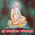

श्री संचारेश्वर चरित्रामृत वाचन

अध्याय पहिला
अध्याय दुसरा
अध्याय तिसरा
अध्याय चौथा
अध्याय पाचवा
अध्याय सहावा
अध्याय सातवा
अध्याय आठवा
अध्याय नववा
अध्याय दहावा
अध्याय अकरावा
अध्याय बारावा
अध्याय तेरावा
अध्याय चौदावा
अध्याय पंधरावा
अध्याय सोळावा
अध्याय सतरावा
अध्याय अठरावा
अध्याय एकोणिसावा
अध्याय विसावा
अध्याय एकविसावा
अध्याय बाविसावा
अध्याय तेविसावा
ऐक लेकरा तुझ्याच जवळी
संचारेश्वर अष्टोत्तरशत नामावली
पाचलेगांवकर महाराजांची आरती - १
पाचलेगांवकर महाराजांची आरती - २
पसायदान
üè† ‡§Æ‡•Å‡§ñ‡•ç‡§Ø ‡§™‡§æ‡§®